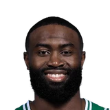
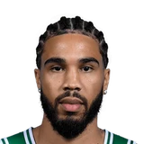
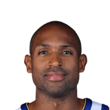
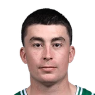

Joe Mazzulla on Jrue Holiday practicing yesterday:
“He was able to do everything that we worked on. Getting better every day.”

Every quote from Joe Mazzulla about Jrue Holiday in the archive, newest first. Each one links to its original source.
Joe Mazzulla on Jrue Holiday practicing yesterday:
“He was able to do everything that we worked on. Getting better every day.”
Brian Robb:Joe Mazzulla on Jrue Holiday playing through illness:
“I didn't really have to manage (his minutes). I kind of trust him.”
Bobby Manning:Mazzulla on bringing Holiday in off bench:
“We have 7, 8, 9 starters ... the preseason is being able to experiment with different lineups.”

Joe Mazzulla on Jaylen Brown10 quotes
Joe Mazzulla on Jayson Tatum10 quotes
Joe Mazzulla on Al Horford6 quotes
Joe Mazzulla on Payton Pritchard4 quotes